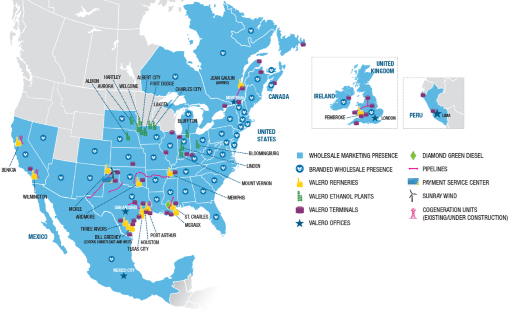
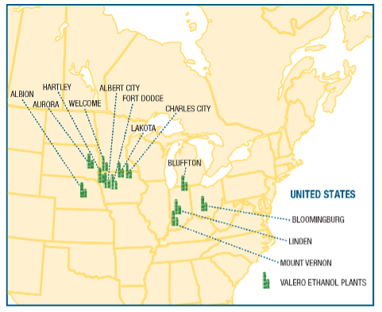
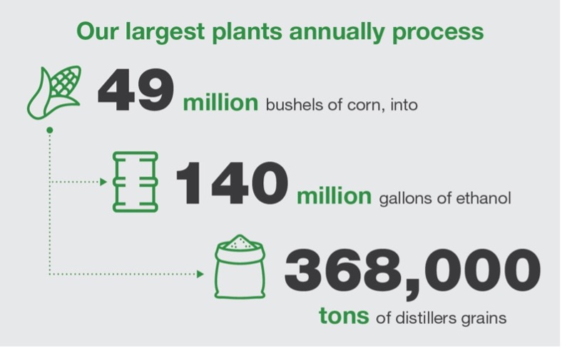

Today’s blog let me tell you guys about some things I learned about bioproducts which I hope you keep in mind.
So first up let’s talk about Corn Ethanol Business. Corn ethanol is a big deal because it's a renewable energy source that helps us rely less on oil. It's especially important for rural areas, creating jobs and supporting farming. (Ethanol Production) Valero is a major player in this field, spread out all over, known for being top dog in making environmentally friendly fuels from oil.
 (Our Location - Valero)When I firsted looked at the map above, I was like, "Whoa, they're everywhere!" Valero is all about making eco-friendly fuels and they're pretty proud of it. They got into making ethanol from corn back in 2009-2010, starting with seven plants they bought from another company. Now, they've got 12 plants spread across different states like Minnesota, South Dakota, Nebraska, and more. (Our History - Valero)
 (From Corn to Fuel - Valero)Valero's ethanol production process is all about efficiency. They use only corn and its by-products, like distiller grains and corn oil, making sure nothing goes to waste. (The Technical Side - Valero) At their 12 plants, they churn out a whopping 1.6 billion gallons of ethanol per year, with their largest plant alone producing 140 million gallons. They make the most out of every part of the kernel, from fermentation to distillation, repurposing non-fermentable parts into valuable products like distiller grains for livestock feed and corn oil for renewable diesel fuel and feed.
 (The Technical Side - Valero)Now that we talked about that let’s move on to the next topic, compostable plastic packaging and why it’s a good way to tackle plastic pollution? It breaks down faster when mixed with food scraps in compost bins. And get this, it helps enrich the soil as it decomposes. But if we want this to work on a large scale, we would need strong composting facilities, people getting the education on how to compost, and packaging with clear labels.
A good example is, Milan. Milan had a great success with compostable bags, it shows they can really help cut plastic pollution by encouraging more food waste composting. When switching from regular plastic bags to compostable ones and making sure composting is done right, it can make a big difference in reducing plastic waste and protecting the environment. (Lesson 20)
Speaking of the environment this brings me to the topic of ecolabels. Specifically, Plant-Based Certification given by the National Sanitation Foundation (NSF). The NSF Plant-Based Certification program ensures that products are made entirely from plants, without any animal ingredients. This is a good option for people who’d want an alternative to foods like meat, eggs, and dairy, made from plants instead. (Plant-Based Certification, FMI)
Companies can join the program by following certain rules about the ingredients set by the NSF. If their products meet these rules, they can get the ecolabel on their packaging to show that their products are truly plant-based. For example, Morning Star Farms Chik'n Nuggets are made from ingredients like wheat flour, soy, and corn oil which are plant-based, qualifying under this program.
These Chik'n Nuggies aren't just yummy but they're also good for the planet. How? Think about this: making traditional milk and beef takes a lot of water which is up to 16,000 liters for just one kilo of meat or milk. But to make soy milk, which is used in these nuggets, only needs about 300 liters of water. (Consumers) That's a huge difference! So, by choosing these plant-based nuggets, you're not only enjoying a tasty snack, you're helping save water and protect the environment. It's a win-win situation.
So, to sum it up, we've covered some important stuff today. We talked about how corn ethanol is a good alternative to oil, how compostable bags can help reduce plastic waste, and how plant-based foods are better for the environment. Valero's big in making eco-friendly fuels, compostable bags are a hit in Milan, and plant-based foods like Chik'n Nuggets save water and protect the planet. It's all about making smart choices for a greener future.